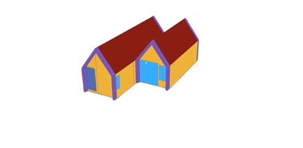
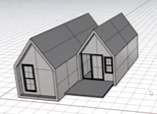
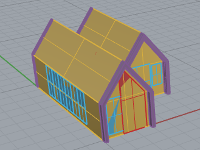
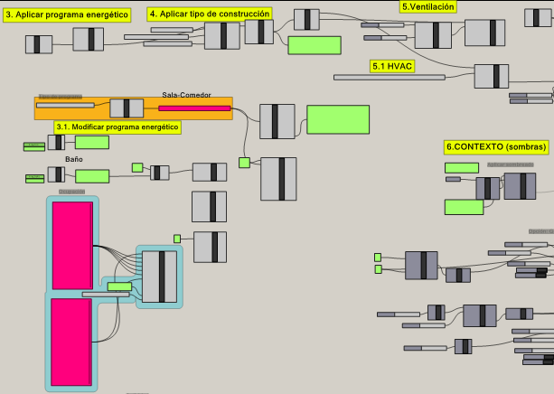
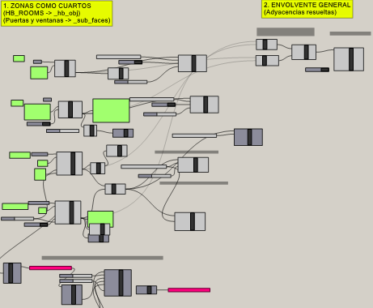
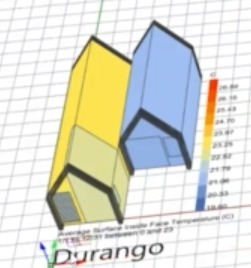
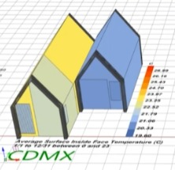
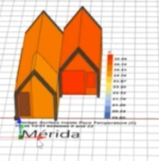

Simulación energética en Honeybee (Grasshopper)
Este estudio se basó en crear cuatro simulaciones energéticas de una casa partiendo desde el modelo 3D y se analizaron los resultados, para lograr la mayor eficiencia energética en la residencia. Se generaron horarios de ocupación, equipamiento, iluminación, agua caliente, HVAC, entre otros.

¿QUE FUE LO QUE SE HIZO?
- - Elección de la casa (importación del modelo a Rhinoceros, creación de las zonas, volumetrías del modelo).
- - Modelado energético (primeros cuartos en Honeybee, puertas y ventanas).
- - Personalización del modelo energético (áreas en planta, personas, iluminación, agua caliente, equipamiento, tipo de construcción, ventilación natural).
- - Simulación energética (Se realizaron cuatro simulaciones energéticas y se retomó la ubicación de las simulación mediante ASHRAE).
- - Resultados de las simulaciones (visualización de la temperatura de la envolvente en los 4 escenarios y normalización de la visualización de temperaturas en la envolvente).

1 - ELECCIÓN DE LA CASA
- - Desde el software "3D Warehouse" de "sketchUp", se descargó el modelo en tres dimensiones de una casa, y se importó al software de modelado "Rhino 7".
- - Se limpió el modelo 3D para generar las volumetrías de los muros y puerta en Rhinoceros. Estas volumetrías son necesarias para que el simulador comprenda como está formada la casa y pueda realizar la simulación energética.
- - Finalmente se importaron las volumetrías a Grasshopper.


2 - MODELADO ENERGÉTICO
- - Se generó la creación de los primeros cuartos en "Honeybee", y se visualizaron las etiquetas para nombrar a cada uno en "Rhino 7".
- - Se generaron y se nombraron las puertas y ventanas en Honeybee.
- - Se terminó de crear el primer modelo energético. Se crearon subsuperficies, adyacencias y se visualizó el modelo energético.
3 - PERSONALIZACIÓN DEL MODELO ENERGÉTICO
- - Generación del tipo de programa y obtención de las áreas de nuestras zonas (o cuartos).
- - Datos sobre los ocupantes: personas por área, agenda de ocupación, generación de plantillas de horario.
- - Actividades metabólicas dentro del programa de personas, cálculo de superficie de piel, nivel de actividad (W/persona), agenda de actividad.
- - Iluminación y agua caliente: método lumen de diseño de los sistemas de iluminación, obtención de número de luminarias en habitación, creación de componente personalizado para obtención de luminarias (método lumen). Agenda de watts por área, agenda de ocupación.


4 - ANÁLISIS DE RESULTADOS
- - Visualización de las cuatro simulaciones energéticas para ver las temperaturas de la envolvente
- - Normalización de las temperaturas para que los colores mantengan el mismo rango de temperaturas en las cuatro casas.
- - Gráficas de los resultados energéticos de cada casa
- - Este trabajo fue hecho en base a un curso guiado, brindado por la Arquitecta Isabel Méndez Garduño, estudiante de Doctorado en Ciencias de Ingeniería



